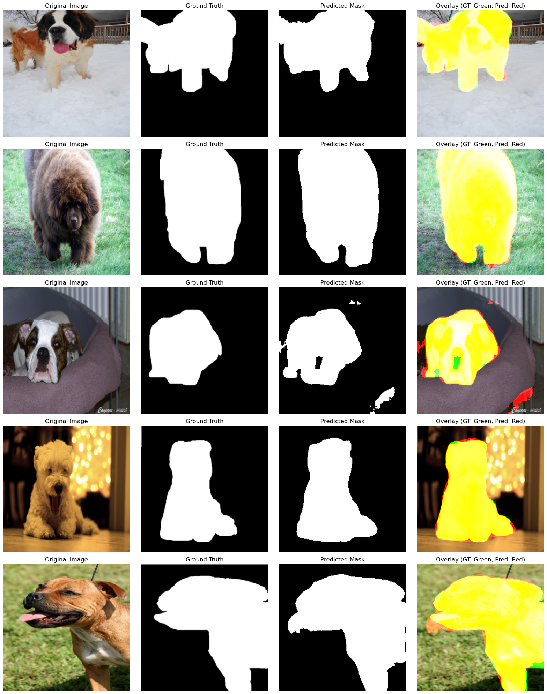

In this report, I’ll present a UNet-based segmentation model trained on the Oxford-IIIT Pet Dataset. The model aims to accurately segment pets from images using a deep learning approach. The trained model has been saved to disk and will be loaded for evaluation and visualization.
Environment Setup
# Load necessary librariesimport osimport numpy as npimport torchimport torch.nn as nnfrom torchvision import transformsfrom torch.utils.data import DataLoader, Datasetimport matplotlib.pyplot as pltfrom PIL import Imagefrom IPython.display import display, Markdown# Set devicedevice = torch.device('cuda'if torch.cuda.is_available() else'cpu')print(f"Using device: {device}")
Using device: cuda
Dataset and Data Loading
Dataset Description
The Oxford-IIIT Pet Dataset consists of images of pets and their corresponding binary masks:
Images: JPEG format (RGB)
Masks: PNG format (binary mask with white for pet and black for background)
Data Loading
To efficiently load the data, I define a custom PetDataset class.
Let’s compare our predicted masks with ground truth to assess model performance.

Conclusion
The UNet-based pet segmentation model achieved a Test Loss of 0.1025 and a Test Dice Score of 0.9536, indicating high accuracy in distinguishing pets from the background. The model demonstrated consistent performance across the dataset, showcasing the effectiveness of the UNet architecture for binary segmentation tasks.
Future work could involve experimenting with advanced architectures like UNet++ or Attention UNet, and leveraging transfer learning to improve generalization. Additionally, extending this approach to multi-class segmentation tasks could further enhance performance.
Reference
Parkhi, O. M., Vedaldi, A., Zisserman, A., & Jawahar, C. V. (2012). Cats and Dogs. In IEEE Conference on Computer Vision and Pattern Recognition.